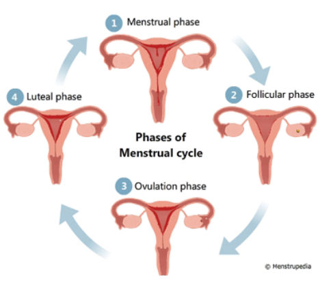

Women still face taboos and limited access to menstrual products.
This platform spreads awareness, tips, and hygiene guidance.
Quick information to help you stay healthy and confident.
Use mild, pH-balanced washes and avoid harsh soaps.
Change pads every 4–6 hours for safe hygiene.
Drink water and avoid holding urine for long.
Warm compress and teas help relieve cramps.
The menstrual cycle prepares the body for pregnancy. It includes hormone changes, ovulation, and shedding of the uterine lining.

Let’s clear the confusion.
Women should not wash hair during periods.
Warm showers reduce cramps and discomfort.
Periods are dirty or impure.
Menstruation is natural and healthy.
You cannot exercise during periods.
Exercise reduces cramps and boosts mood.
Over 1.8 billion women menstruate every month, yet many lack access to proper hygiene products and accurate information. Using the right products and maintaining intimate hygiene reduces infections by over 60%.
Good hygiene = Better health, comfort & confidence.